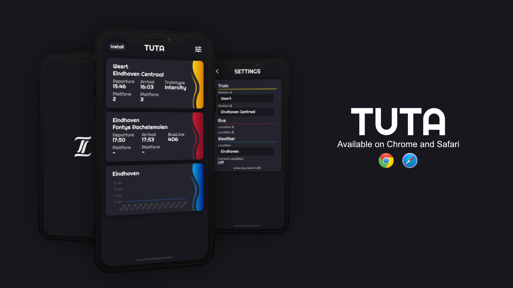
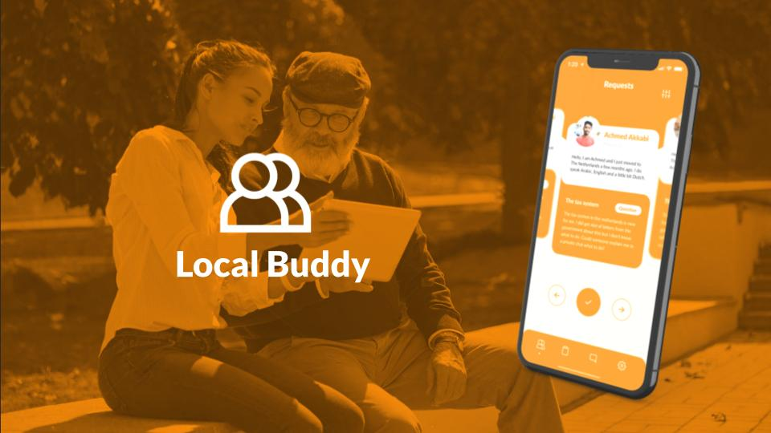
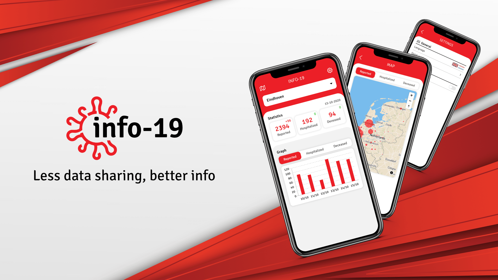

Smart Mobile | DUO app 1
TUTA | Travel app
ASSIGNMENTS


Municipality Eindhoven
Local Buddy | Neighbourhood app

Smart Mobile | DUO app 2
Info-19 | COVID-19 Info app
Info-19 | COVID-19 Info app
BIO
Hey there, I am Jorrit Verstappen, 22 years old and I study ICT & Media Design with a
specialisation in App
development at Fontys in Eindhoven. My ambition is to become a front-end developer or a web app developer.
I like experimenting with new languages and gaining more experience with the ones I think are crucial for web development like, HTML, CSS(SCSS) and JavaScript. Languages that I am confident in are also these 3 and for frameworks I prefer using Vue.
I like experimenting with new languages and gaining more experience with the ones I think are crucial for web development like, HTML, CSS(SCSS) and JavaScript. Languages that I am confident in are also these 3 and for frameworks I prefer using Vue.
CONTACT
TUTA

 Figma
Figma
 Affinity Designer
Affinity Designer
 Vue.js
Vue.js
 GitHub
GitHub
CHALLENGE
Many dutch travelers are on the road every day by public transport, for this they use quite a few different
apps to get the right information. We think the switching between apps while traveling could be done better by
combining the information into a single app. Also since the amount of travelers by public transport increases
each year we think this app could become more useful as time goes on.
CONCEPT
TUTA combines the info you would receive from the NS app and 9292 into a simple overview. The info you would
see would adjust depending on the daily routine you follow, this also means that the train and bus info
would work together.
So for example if you take the train at 8:00 in the morning and arrive at the station at 8:30, then the bus info would show the bus for any busses after 8:30. This way the user only has to open the app and look at it without any necessary button presses which saves time every day.
So for example if you take the train at 8:00 in the morning and arrive at the station at 8:30, then the bus info would show the bus for any busses after 8:30. This way the user only has to open the app and look at it without any necessary button presses which saves time every day.
MOCKUP
TECHNOLOGIES
Local Buddy
 Figma
Vue.js
GitHub
Figma
Vue.js
GitHub
CHALLENGE
A problem that occurs in various municipalities in the Netherlands is that there is often little contact
between new residents and the local population. One reason for this is that it can sometimes be challenging to
make initial contact.
CONCEPT
Local Buddy is a platform that connects newcomers and the local population so that newcomers can integrate
more easily. For example, if someone needs help with a certain task or just wants to explore the hotspots in
the city, they can easily contact someone who could help him or her via the app.
MOCKUP
TECHNOLOGIES
Info-19


 Figma
Affinity Designer
Vue.js
GitHub
Figma
Affinity Designer
Vue.js
GitHub
CHALLENGE
As most likely everyone has noticed by now, COVID-19 otherwise called Corona has taken over the world and is
found everywhere in the daily news since March 2020.
During the first peak in April-May there started a discussion about apps that could help control and stabilise
the COVID-19 epidemic.
Shortly after, each country was busy developing their own app. Each of these apps are different in their own way but what most of these apps do have in common is that they take some to a lot of privacy sensitive data on use. This includes personal information and your location.
We believe there is a better solution for this that doesn’t force users creating an account with all their personal details and share their location necessarily.
Shortly after, each country was busy developing their own app. Each of these apps are different in their own way but what most of these apps do have in common is that they take some to a lot of privacy sensitive data on use. This includes personal information and your location.
We believe there is a better solution for this that doesn’t force users creating an account with all their personal details and share their location necessarily.
CONCEPT
Info-19 is an app that shows the user information about how COVID-19 is progressing daily in The Netherlands
and their own municipality while keeping the user's privacy intact.
I believe that showing the user the most up to date info about the corona virus in their location would inform them enough to prevent them from going to certain areas or show them how careful they should be if they do.
The mentioned location above doesn't mean that Info-19 will force users to share their location but it gives them the option. On initial launch of the app, the location will be a default value which can be changed to whatever location the user would like. If they don’t mind sharing their active location they can put it on auto and the app will keep the location updated if the app remains open in the background.
Each time the user is in a location for more than 10 minutes (if location is set to auto) the app will give a push notification containing daily information (amount of cases, hospitalized and deceased) in their municipality so not just their region. I chose for municipalities since this gives a more accurate result and regions would be too broad especially if the user lives in a rural area.
Other features in the app will be primarily focused on giving more actual information about COVID-19 in The Netherlands, this would include for example an interactive map to get a view of how COVID-19 progresses in The Netherlands.
I believe that showing the user the most up to date info about the corona virus in their location would inform them enough to prevent them from going to certain areas or show them how careful they should be if they do.
The mentioned location above doesn't mean that Info-19 will force users to share their location but it gives them the option. On initial launch of the app, the location will be a default value which can be changed to whatever location the user would like. If they don’t mind sharing their active location they can put it on auto and the app will keep the location updated if the app remains open in the background.
Each time the user is in a location for more than 10 minutes (if location is set to auto) the app will give a push notification containing daily information (amount of cases, hospitalized and deceased) in their municipality so not just their region. I chose for municipalities since this gives a more accurate result and regions would be too broad especially if the user lives in a rural area.
Other features in the app will be primarily focused on giving more actual information about COVID-19 in The Netherlands, this would include for example an interactive map to get a view of how COVID-19 progresses in The Netherlands.
MOCKUP
SCREENSHOTS
DEPLOYMENT
Info-19 has been deployed here and for the best experience it
is advised to be used on a mobile device.
I couldn't publish Info-19 in the app or play store since they both only allow COVID-19 apps from a recognized institution.
I couldn't publish Info-19 in the app or play store since they both only allow COVID-19 apps from a recognized institution.
TECHNOLOGIES